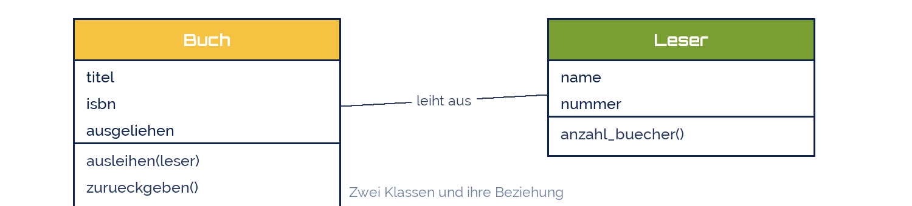

ChiemSeherin
ChiemSeherin
Good morning!
Nur das Schöne wird die Welt retten!
Fjodor Dostojewski
Nicht verzagen, Doc Alvers fragen!
Informatik — FOS 12
Objektorientierte Programmierung I
Wahlbereich 2: Klasse, Objekt, Attribut, Methode
Nicht verzagen, Doc Alvers fragen!
Kapitel 01
Ein neuer Blick
Daten und Verhalten gehören zusammen
Nicht verzagen, Doc Alvers fragen!
Wo die bisherige Art an Grenzen stößt
Bisher: Daten liegen in Variablen, Verhalten steckt in Funktionen — getrennt
Ein Auto braucht marke, tempo, tueren … und beschleunigen(), bremsen(), hupen()
Für drei Autos bräuchte man neun Variablen und Funktionen mit vielen Parametern
Die Objektorientierung packt beides zusammen: ein Objekt weiß etwas und kann etwas
Damit modelliert man die Wirklichkeit, statt sie in Einzelteile zu zerlegen
Nicht verzagen, Doc Alvers fragen!
Zwei Denkweisen im Vergleich
| prozedural (LB 2) | objektorientiert | |
|---|---|---|
| Bausteine | Variablen und Funktionen | Klassen und Objekte |
| Zusammenhalt | der Programmierer merkt ihn sich | die Klasse hält ihn fest |
| Aufruf | beschleunigen(tempo, wert) | auto.beschleunigen(wert) |
| Erweitern | neue Funktion schreiben | neue Klasse ableiten |
| gut für | kurze, klare Abläufe | viele gleichartige Dinge |
Beides ist richtig — die Frage ist was passt zum Problem
OOP lohnt sich, sobald es viele gleichartige Dinge mit eigenem Zustand gibt
Nicht verzagen, Doc Alvers fragen!
Kapitel 02
Klasse und Objekt
Der Bauplan und das gebaute Ding
Nicht verzagen, Doc Alvers fragen!
Die vier Grundbegriffe
Klasse = der Bauplan. Sie beschreibt, was alle Dinge dieser Art haben und können
Objekt (Instanz) = ein konkretes Ding nach diesem Bauplan — mit eigenen Werten
Attribut = eine Eigenschaft des Objekts, seine Daten (marke, tempo)
Methode = eine Fähigkeit des Objekts, seine Funktion (beschleunigen())
Bild dazu: der Bauplan eines Hauses ist die Klasse, die gebauten Häuser sind Objekte
Nicht verzagen, Doc Alvers fragen!
Eine Klasse im UML-Diagramm
Drei Fächer: Name oben, Attribute in der Mitte, Methoden unten
Das Diagramm ist sprachunabhängig — daraus wird Python, Java oder C++
Es beschreibt eine Klasse und damit beliebig viele Objekte
Nicht verzagen, Doc Alvers fragen!
Dieselbe Klasse in Python
class Auto:
def __init__(self, marke, tueren): # Konstruktor
self.marke = marke # Attribute anlegen
self.tempo = 0
self.tueren = tueren
def beschleunigen(self, wert):
self.tempo = self.tempo + wert
def bremsen(self):
self.tempo = 0
def zeige(self):
print(f'{self.marke}: {self.tempo} km/h, {self.tueren} Tueren')Nicht verzagen, Doc Alvers fragen!
Objekte erzeugen und benutzen
a1 = Auto('Fiat', 3) # Objekt 1 - der Konstruktor laeuft
a2 = Auto('Volvo', 5) # Objekt 2 - voellig eigene Attribute
a1.beschleunigen(50)
a1.beschleunigen(30)
a2.beschleunigen(120)
a1.zeige() # Fiat: 80 km/h, 3 Tueren
a2.zeige() # Volvo: 120 km/h, 5 Tueren
a1.bremsen()
a1.zeige() # Fiat: 0 km/h, 3 Tueren
print(a2.tempo) # 120 - Attribut direkt lesenNicht verzagen, Doc Alvers fragen!
Was in dem Code steckt
| Schreibweise | heißt | Bedeutung |
|---|---|---|
| class Auto: | Klassendefinition | der Bauplan wird bekannt gemacht |
| __init__ | Konstruktor | läuft automatisch beim Erzeugen |
| self | das eigene Objekt | unterscheidet a1 von a2 |
| self.marke = marke | Attribut setzen | der Wert gehört ab jetzt zum Objekt |
| a1 = Auto('Fiat', 3) | Instanziierung | ein neues Objekt entsteht |
| a1.beschleunigen(50) | Botschaft senden | das Objekt führt seine Methode aus |
self ist kein Zauberwort, sondern der erste Parameter jeder Methode — Python setzt ihn beim Aufruf selbst ein
Nicht verzagen, Doc Alvers fragen!
Kapitel 03
Modellieren
Vom Text zur Klasse
Nicht verzagen, Doc Alvers fragen!
Rezept: Substantive und Verben unterstreichen
| im Aufgabentext | wird zu | Beispiel Bibliothek |
|---|---|---|
| Substantiv (Ding) | Klasse | Buch, Leser, Ausleihe |
| Eigenschaft davon | Attribut | titel, isbn, ausgeliehen |
| Verb (Tätigkeit) | Methode | ausleihen(), zurueckgeben() |
| konkretes Exemplar | Objekt | das Buch mit ISBN 978-3-… |
Erst Substantive markieren, dann prüfen: ist das ein eigenständiges Ding oder nur eine Eigenschaft?
„Der Leser leiht ein Buch aus“ → Methode ausleihen() bei Buch oder bei Leser — beides begründbar
Nicht verzagen, Doc Alvers fragen!
Ein kleines Modell

Die Linie zwischen den Klassen ist eine Assoziation — hier: ein Leser leiht Bücher aus
Das erinnert nicht zufällig an das ER-Modell aus Lernbereich 1: Entität und Klasse sind verwandt
Nicht verzagen, Doc Alvers fragen!
Und in Python
class Buch:
def __init__(self, titel, isbn):
self.titel = titel
self.isbn = isbn
self.ausgeliehen = False
def ausleihen(self):
if self.ausgeliehen:
print('Schon ausgeliehen.')
return False
self.ausgeliehen = True
return True
b = Buch('Der Prozess', '978-3-15-000001')
print(b.ausleihen()) # True
print(b.ausleihen()) # Schon ausgeliehen. / FalseNicht verzagen, Doc Alvers fragen!
Die Klasse ist der Bauplan, das Objekt ist das gebaute Ding. Attribute sind, was es weiß — Methoden sind, was es kann.
Merksatz
Nicht verzagen, Doc Alvers fragen!
Fun Facts: OOP
Simula 67 aus Oslo war die erste objektorientierte Sprache — gebaut, um Warteschlangen zu simulieren
Alan Kay prägte den Begriff „object-oriented“ und meinte damit vor allem das Senden von Botschaften
Smalltalk (1972) machte alles zum Objekt — sogar die Zahl 3 und die Klasse selbst
In Python ist wirklich alles ein Objekt: probiert einmal (3).bit_length() aus
self heißt in Java und C++ this — dieselbe Idee, anderes Wort
Nicht verzagen, Doc Alvers fragen!
Eure Aufgabe: die erste eigene Klasse
Schreibt eine Klasse Schueler mit den Attributen name, klasse und einer Liste noten
Methoden: note_hinzufuegen(note), schnitt() und zeige()
Erzeugt drei Objekte, tragt Noten ein und lasst euch alle Schnitte ausgeben
Zeichnet vorher das UML-Klassendiagramm — Name, Attribute, Methoden
Zusatz: eine Klasse Konto mit einzahlen(), abheben() — und Abheben nur, wenn Deckung da ist
Nicht verzagen, Doc Alvers fragen!